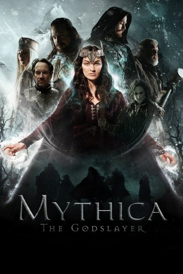

#7650 Mythica: The Godslayer *OmU*
 
 IMDB-Wertung: 5.4 / 10
IMDB-Wertung: 5.4 / 10  Metascore: 0
Metascore: 0 
As the Lich King's zombie legions ravage the world, Marek, a cursed young sorceress, embarks on a quest to obtain a weapon from the gods, with her friend Dagen, a self-serving half-elf rogue. But when she joins her sworn enemy in a desperate attempt to save the world, she must recover the good in herself before her friends are all dead, and defeat the Lich King before the gods are destroyed and the world forever enslaved.
Englisch
Jahr: 2016
Dauer: 117 Minuten
FSK:
Land: USA Studio: PDSTonspuren:
Untertitel:
Auflösung: 720p (1280x720) Größe: 5580 MB
Genre: Action, Abenteuer, Fantasy
Regisseur: John Lyde
Drehbuch: Jason Faller
Soundtrack:
Darsteller:
 Melanie Stone als Marek
Melanie Stone als Marek Adam Johnson als Thane
Adam Johnson als Thane Matthew Mercer als Szorlok
Matthew Mercer als Szorlok Jake Stormoen als Dagen
Jake Stormoen als Dagen- Bailee Michelle Johnson als Young Woman
- Nicola Posener als Teela
 Christopher Robin Miller als Hammerhead
Christopher Robin Miller als Hammerhead- Cooper Daniel Johnson als Page
- Clint Vanderlinden als General Argus
- Paris Warner als Zombie Girl
 James C. Morris als Anxious Peasant
James C. Morris als Anxious Peasant- Kristen Marie Jensen als Peasant Woman
- Kristian Nairn als Tek
- Danny James als Messenger
- Trenton James als Voice of Roghar
- Devin Hansen als Zombie
- Jon Lang als Zombie
- Seth Williams als Vitalian Soldier / Golgotian Soldier
- Ethan Hunt als Young Man
- Randall Malin als Zombie Dad
- James Martin als General Roghar
- Andy Jones als Grim Peasant
- Ruby Jones als Peasant Girl
- Charlie Jones als Peasant Boy
- Ivy Jones als Little Peasant Girl
- Lauren Spalding als Ana-Sett
- Griffin Bonacci als Peasant
- Mario DeAngelis als Towns Person
- Sheila Orey Sorensen als Peasant
Datei: X:\4-Tetralogie(M-Z)\Mythica\Mythica The Godslayer OmU (2016, FSK, 1280x720).mkv seit 29.11.2017
Festplatte: HD Collection-3(N-Z)-6(A-Z)
 Es gibt insgesamt 7 Filme in der Gruppe '4-Tetralogie(M-Z)\Mythica'
Es gibt insgesamt 7 Filme in der Gruppe '4-Tetralogie(M-Z)\Mythica'